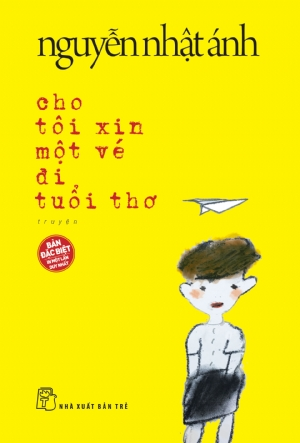
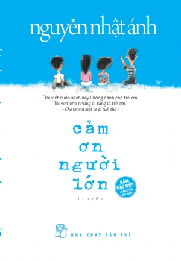
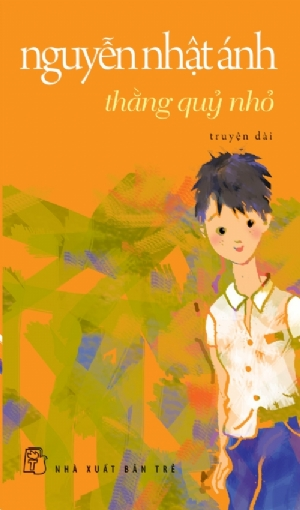
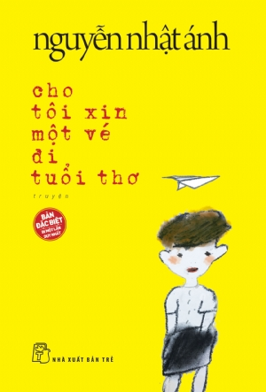
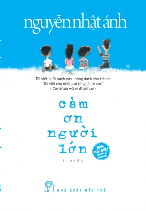
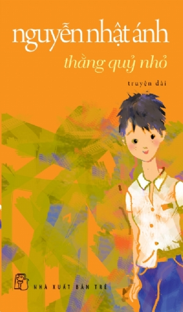

Nguyễn Nhật Ánh
Nguyễn Nhật Ánh (sinh ngày 7 tháng 5 năm 1955) là một nhà văn người Việt. Ông được biết đến qua nhiều tác phẩm văn học về đề tài tuổi mới lớn, các tác phẩm của ông rất được độc giả ưa chuộng và nhiều tác phẩm đã được chuyển thể thành phim.
Ông lần lượt viết về sân khấu, phụ trách mục tiểu phẩm, phụ trách trang thiếu nhi và hiện nay là bình luận viên thể thao trên báo Sài Gòn Giải phóng Chủ nhật với bút danh Chu Đình Ngạn. Ngoài ra, ông còn có những bút danh khác như Anh Bồ Câu, Lê Duy Cật, Đông Phương Sóc, Sóc Phương Đông,...


 




